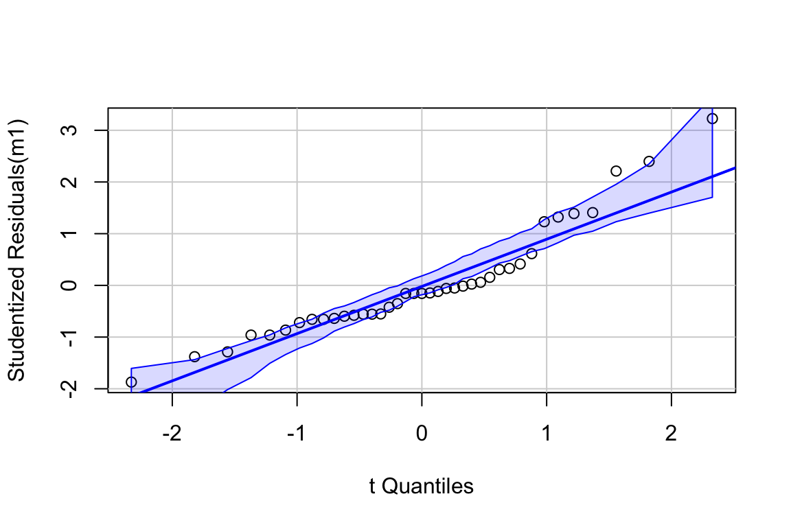

Chapter 10 A linear model with a single, categorical X
10.1 A linear model with a single, categorical X variable estimates the effect of X on the response.
To introduce a linear model with a single, categorical \(X\) variable, I’ll use data from a set of experiments designed to measure the effect of 12,13-diHOME on brown adipose tissue (BAT) thermoregulation and the mechanism of this effect.
Download the source data files and move to a new folder named “The cold-induced lipokine 12,13-diHOME promotes fatty acid transport into brown adipose tissue”.
Cold temperature and the neurotransmitter/hormone norepinephrine are known to stimulate increased thermogenesis in BAT cells. In this project, the researchers probed the question “what is the pathway that mediates the effect of cold-exposure on BAT thermogenesis?”. In the “discovery” component of this project, the researchers measured plasma levels of 88 lipids with known signaling properties in humans exposed to one hour of both normal (20 °C) and cold temperature (14 °C) temperature. Of the 88 lipids, 12,13-diHOME had the largest response to the cold treatment. The researchers followed this up with experiments on mice.
10.1.1 Example 1 – two treatment levels (“groups”)
Let’s start with the experiment in Figure 3d, which was designed to measure the effect of 12,13-diHOME on plasma triglyceride level. If 12,13-diHOME stimulates BAT activity, then levels in the 12,13-diHOME mice should be less than levels in the control mice.
response variable: serum_tg, a continuous variable.
treatment variable: treatment, with levels: “Vehicle”, “12,13-diHOME” (the control or “Vehicle” mice were injected with saline). Coded as a factor.
design: single, categorical X
10.1.1.1 The Report
10.1.1.1.1 Figure 3d – import
The first step in any analysis is to open the data and, if necessary, wrangle into an analyzable format.
10.1.1.1.2 Figure 3d – exploratory plots
The second step is to explore the data to 1) check for biological implausible outliers that suggest measurement failure, or transcription error (from a notebook, not in a cell) and 2) assess reasonable distributions and models for analysis.

There are no obviously implausible data points. A normal distribution is a good, reasonable start. This can be checked more thoroughly after fitting the model.
10.1.1.1.3 Figure 3d – fit the model
10.1.1.1.4 Figure 3d – check the model

The Q-Q plot indicates the distribution of residuals is well within that expected for a normal sample and there is no cause for concern with inference.

##
## Suggested power transformation: 0.8167264The spread-location plot shows no conspicuous trend in how the spread changes with the conditonal mean. There is no cause for concern with inference.
10.1.1.1.5 Figure 3d – inference
10.1.1.1.5.1 coefficient table
## Estimate Std. Error t value Pr(>|t|)
## (Intercept) 42.620042 1.667226 25.563447 1.926081e-10
## treatment12,13-diHOME -7.167711 2.357813 -3.039982 1.246296e-02
## 2.5 % 97.5 %
## (Intercept) 38.90523 46.334853
## treatment12,13-diHOME -12.42125 -1.91417510.1.1.1.5.2 Marginal means table
## treatment emmean SE df lower.CL upper.CL
## Vehicle 42.6 1.67 10 38.9 46.3
## 12,13-diHOME 35.5 1.67 10 31.7 39.2
##
## Confidence level used: 0.9510.1.1.1.5.3 Contrasts table
## contrast estimate SE df lower.CL upper.CL t.ratio p.value
## 12,13-diHOME - Vehicle -7.17 2.36 10 -12.4 -1.91 -3.040 0.0125
##
## Confidence level used: 0.9510.1.1.1.6 Figure 3d – plot the model

10.1.1.1.7 Figure 3d – report the model results
Mean serum TG in mice with 12,13-diHOME (35.5 µg/dL, 95% CI: 31.7, 39.2) was 7.17 µg/dL less (95% CI: -12.4, -1.9, \(p = 0.012\)) than mean serum TG in control mice (42.6 µg/dL, 95% CI: 38.9, 46.3).
10.1.1.2 Understanding the Analysis
The variable \(treatment\) in the Figure 3d mouse experiment, is a single, categorical \(X\) variable. In a linear model, categorical variables are called factors. \(treatment\) can take two different values, “Vehicle” and “12,13-diHOME”. The different values in a factor are the factor levels (or just “levels”). “Levels” is a strange usage of this word; a less formal name for levels is “groups”. In a Nominal categorical factor, the levels have no units and are unordered, even if the variable is based on a numeric measurement. For example, I might design an experiment in which mice are randomly assigned to one of three treatments: one hour at 14 °C, one hour at 18 °C, or one hour at 26 °C. If I model this treatment as a nominal categorical factor, then I simply have three levels. While I would certainly choose to arrange these levels in a meaningful way in a plot, for the analysis itself, these levels have no units and there is no order. Ordinal categorical factors have levels that are ordered but there is no information on relative distance. The treatment at 18 °C is not more similar to 14 °C than to 26 °C. Nominal categorical factors is the default in R and how all factors are analyzed in this text.
10.1.1.2.1 Linear models are regression models
The linear model fit to the serum TG data is
\[\begin{align} serum\_tg &= treatment + \varepsilon \varepsilon ~ N(0, sigma^2) \tag{10.1} \end{align}\]
This specification is potentially confusing because the variable \(treatment\) is a factor containing the words “Vehicle” and “12,13-diHOME” and not numbers. A linear model with a single factor containing two levels can be specified using notation for a regression model.
\[\begin{align} Y &= \beta_0 + \beta_1 X_1 + \varepsilon// \varepsilon &\sim N(0, \sigma^2) \tag{10.2} \end{align}\]
Model (10.2) is a regression model where \(X_1\) is not the variable \(treatment\), containing the words “Vehicle” or “12,13-diHOME” but a numeric variable that indicates group membership, containing the number 1 if the element belongs to the first non-reference level (if there are only two levels, then there is only a single, non-reference level) and the number 0 if the element doesn’t belong to the first non-reference level.
For the serum TG data, “Vehicle” is the reference, so we can write the linear model fit to the serum TG data using regression model notation.
\[\begin{align} serum\_tg &= \beta_0 + \beta_1 treatment_{12,13-diHOME} + \varepsilon// \varepsilon &\sim N(0, \sigma^2) \tag{10.3} \end{align}\]
Model (10.3) is a regression model where \(treatment_{12,13-diHOME}\) is not the variable \(treatment\), containing the words “Vehicle” or “12,13-diHOME” but a numeric variable that indicates membership in the level “12,13-diHOME”. This variable contains the number 1 if the element belongs to “12,13-diHOME” and the number 0 if the element doesn’t belong to “12,13-diHOME”. More generally, model (10.2) is a regression model where \(X_1\) contains the number 1 if the element belongs to the first non-reference level (if there are only two levels, then there is only a single, non-reference level) and the number 0 if the element doesn’t belong to the first non-reference level. If there were a third level within \(treatment\) (say, a 12,13-diHOME inhibitor), there would be a second \(X\) variable added to the model (\(X_2\)), which would contain the number 1 if the element belongs to the second non-reference level (12,13-diHOME inhibitor) and the number 0, otherwise.
The \(X\) variables in the regression model notation that indicate group membership are called indicator variables. There are several ways of coding indicator variables and the way described here is called dummy or treatment coding. This text will typically call dummy-coded indicator variables dummy variables. The lm function creates these dummy variables under the table, in something called the model matrix. You won’t see these columns in your data but if you did, they would look like this
| treatment | serum_tg | treatment12,13-diHOME |
|---|---|---|
| Vehicle | 42.35908 | 0 |
| Vehicle | 43.82046 | 0 |
| Vehicle | 39.01879 | 0 |
| Vehicle | 48.72651 | 0 |
| Vehicle | 45.17745 | 0 |
| Vehicle | 36.61795 | 0 |
| 12,13-diHOME | 36.09603 | 1 |
| 12,13-diHOME | 32.12944 | 1 |
| 12,13-diHOME | 33.38205 | 1 |
| 12,13-diHOME | 41.52401 | 1 |
| 12,13-diHOME | 31.71190 | 1 |
| 12,13-diHOME | 37.87056 | 1 |
R names dummy variables by combining the names of the factor and the name of the level within the factor. So the \(X\) variable that R creates in the model matrix for the fit linear model in model (10.2) is \(treatment12,13-diHOME\). You can see these names as terms in the coefficient table of the fit model.
Analysis fail. There are alternatives to dummy coding for creating indicator variables. Dummy coding is the default in R and it makes sense when thinking about experimental data with an obvious control level. I also like the interpretation of a “interaction effect” using Dummy coding. The classical coding for ANOVA is deviation effect coding, which creates coefficients that are deviations from the grand mean. In contrast to R, Deviation coding is the default in many statistical software packages including SAS, SPSS, and JMP. The method of coding can make a difference in an ANOVA table. Watch out for this – I’ve come across numerous published papers where the researchers used the default dummy coding but interpreted the ANOVA table as if they had used deviation coding. This is both getting ahead of ourselves and somewhat moot, because I don’t advocate publishing ANOVA tables.
10.1.1.2.2 The “Estimates” in the coefficient table are estimates of the parameters of the linear model fit to the data.
## Estimate Std. Error t value Pr(>|t|)
## (Intercept) 42.620042 1.667226 25.563447 1.926081e-10
## treatment12,13-diHOME -7.167711 2.357813 -3.039982 1.246296e-02
## 2.5 % 97.5 %
## (Intercept) 38.90523 46.334853
## treatment12,13-diHOME -12.42125 -1.914175The linear model (10.3) fit to the serum TG data has three parameters, including two in the regression equation. The “estimates” in the coefficient table are the estimates of the regression parameters \(\beta_0\) and \(\beta_1\). These estimates are the coefficients of the fit model
\[\begin{equation} serum\_tg = b_0 + b_1 \beta_1 treatment_{12,13-diHOME} + e \tag{10.4} \end{equation}\]
The coefficients \(b_0\) and \(b_1\) are the two values in the column “Estimate” of the table of model coefficients (or “coefficient table”). In addition to the estimates, the table inlcludes the standard error, 95% confidence interval, and t and p-values of each estimate.
10.1.1.2.3 The parameters of a linear model using dummy coding have an impoortant interpretation
It is important to understand the interpretation of the coefficients of the fit linear model @(eq:fit-serum-tg). The “coefficient” \(b_0\) is the first value in the “Estimate” column of the coefficient table (in the row “(intercept)”). This is the conditional mean of the response for the reference level, which is “Vehicle”. Remember that a conditional mean is the mean of a group that all have the same value for one or more \(X\) variables. The coefficient \(b_1\) is the second value in the “Estimate” column (in the row “treatment12,13-diHOME”). \(b_1\) is the difference between the conditional means of the 12,13-diHOME level and the reference (Vehicle) level. The direction of this difference is important; it is \(\bar{Y}_{12,13-diHOME} - \bar{Y}_{Vehicle}\), that is, the non-reference level minus the reference level. The estimate for treatment12,13-diHOME is the effect that we are interested in. Specifically, it is the effect of 12,13-diHOME on serum TG. When we inject 12,13-diHOME, we find the mean serum TG decreases by -7.2 µg/dL relative to the mean serum TG in the mice that were injected with saline. Importantly, the reference level is not a property of an experiment but is set by whomever is analyzing the data. Since the non-reference estimates are differences in means, it often makes sense to set the “control” treatment level as the reference level.
The intercept estimates the true, mean serum TG in a hypothetical population of mice that have been given saline but not 12,13-diHOME. The treatment12,13-diHOME value estimates the true, difference in means between a hypothetical population of mice that have been given 12,13-diHOME and a population that has been given only saline.
tl;dr. What is a population? In the experimental biology examples in this text, we might consider the population as a very idealized, infinitely large set of mice, or fish, or fruit flies, or communities from which our sample is a reasonably representative subset. For the experiments in the 12,13-diHOME study, the population might be conceived of as the hypothetical, infinitely large set of 12-week-old, male, C57BL/6J mice, raised in the mouse facility at Joslin Diabetes Center. An even more abstract way to way to think about what the population could be is the infinitely large set of values that could generated by the linear model.

Figure 10.1: What the coefficients of a linear model with a single categorical X mean. The means of the two treatment levels for the serum TG data are shown with the filled circles. The intercept (\(b_0\)) is the mean of the reference treatment level. The coefficient \(b_1\) is the difference between the treatment level’s mean and the reference mean. As with a linear model with a continuous X, the coefficients are effects.
Let’s put this all together. \(b_0\) is the conditional mean of the reference level (“Vehicle”) and is an estimate of \(\beta_0\), the true, conditional mean of the population. \(b_1\) is the difference in the conditional means of the first non-reference level (“12,13-diHOME”) and the reference level (“Vehicle”) and is an estimate of \(\beta_1\), the true difference in the conditional means of the population with and without the treatment 12,13-diHOME.
10.1.1.2.4 The table of marginal means is a table of modeled means and inferential statistics, not a table of raw means and inferential statistics
The table of marginal means for the model fit to the Figure 3d serum TG data is (shown to five decimal places for a later comparison)
| treatment | emmean | SE | df | lower.CL | upper.CL |
|---|---|---|---|---|---|
| Vehicle | 42.62004 | 1.66723 | 10 | 38.90523 | 46.33485 |
| 12,13-diHOME | 35.45233 | 1.66723 | 10 | 31.73752 | 39.16714 |
A marginal mean is the mean of a set of conditional means and is, consequently, a modeled mean (it comes from a model). The table of marginal means (“marginal means table) outputs the specified marginal means and the standard error and 95% confidence interval of each mean. There is no test-statistic with a p-value because there is no significance test. The specified marginal means table of the Figure 3d data is not too exciting because it simply contains the conditional means – the values are not marginalized over any \(X\). In several sections of this text, the marginal means table will contain values that average conditional means over one or more factors. The marginal means table also computes these means as the expected value (mean) at the average value of a continuous covariate, if any covariates are in the linear model. Because the marginal means table contains different sorts of means (conditional, marginal, adjusted), this text will generally refer to the means in this table as”modeled means".
If the design is balanced, meaning the sample size for each conditional mean is the same, then a marginal mean will simply equal the average of the individual values. But, this is not the case for unbalanced designs. For example, if we unbalance the Figure 3d data by throwing out the first row of and refit the model, the raw mean of \(serum\_tg\) is 38.734 and the marginal mean, marginalized over \(treatment\), is 39.062.
Like the modeled means, the standard errors in the marginal means table are modeled and not raw values. Recall that the standard error of a mean is \(\frac{s}{\sqrt{n}}\), where \(s\) is the sample standard deviation. In the marginal means table, \(s\) is not the raw standard deviation of the group but the estimate of \(\sigma\), the square root of the true variance. As with the raw standard error of the mean, the denominator is the sample size \(n\) for the group. Since the numerator of the modeled SE is the same for all groups, the modeled SE will be the same in all groups that have the same sample size, as seen in the marginal means table for the model fit to the Figure 3d data. This may seem odd. It is not. Remember that an assumption of the linear model is homogeneity of variances – that the \(e_i\) for each group are drawn from \(N(0, \sigma^2)\) regardless of group. \(s^2\), which is computed as a variance of the model residuals, is an estimate this true variance (\(\sigma^2\)). It is also useful to think of the raw variances computed separately for each group (level of \(treatment\)) as estimates of \(\sigma^2\). The separately computed estimates are averaged to create a single estimate, which is equal to \(s^2\) computed from the model residuals.
## [1] 4.083853## [1] 3.893801## [1] 4.083853## [1] 1.667226## [1] 4.083853## [1] 4.083853## [1] 4.303704## [1] 4.303704## [1] 1.75698## [1] 1.924675| treatment | emmean | SE | df | lower.CL | upper.CL |
|---|---|---|---|---|---|
| Vehicle | 42.67223 | 1.924675 | 9 | 38.31832 | 47.02615 |
| 12,13-diHOME | 35.45233 | 1.756980 | 9 | 31.47777 | 39.42690 |
## [1] 4.303704## [1] 4.361875##
## Welch Two Sample t-test
##
## data: serum_tg by treatment
## t = 3.04, df = 9.8307, p-value = 0.0127
## alternative hypothesis: true difference in means is not equal to 0
## 95 percent confidence interval:
## 1.901885 12.433536
## sample estimates:
## mean in group Vehicle mean in group 12,13-diHOME
## 42.62004 35.45233But, unlike the modeled means, the modeled standard error and confidence interval will, effectively, never equal the raw values.
10.1.1.2.5 Report the modeled means and inferential statistics from the marginal means table, not the raw means and inferential statistics
This text advocates the best practice of reporting, including plotting, the modeled means and inferential statistics (SEM or confidence interval) and not the raw means and summary statistics, because only the modeled means and statistics are consistent with the modeled statistical analysis. Raw means and summary statistics can both mask the effects that we want to communicate and give misleading interpretation of the statistics, including the conditional distribution of the data.
The raw, group means and standard errors of each mean of the Figure 3d serum TG are
## treatment mean SE
## 1: Vehicle 42.62004 1.773251
## 2: 12,13-diHOME 35.45233 1.553984The raw means are equal to the modeled means but the SE differs.